Case Studies
Yiwen (Eva) Wang
Melbourne Integrative Genomics, School of Mathematics and Statistics, The University of Melbourne, Australia
yiwenw5@student.unimelb.edu.au
04 January, 2021
case_studies.RmdIntroduction
We analysed three 16S rRNA gene sequencing datasets at the operational taxonomic unit (OTU). The count data were filtered to alleviate sparsity, then transformed with Centered Log Ratio (CLR), a pragmatic way to handle both uneven library sizes and compositional structure as (Susin et al. 2020). CLR also converts skewed data towards a Gaussian-like distribution.
Example datasets
Sponge A. aerophoba
This study investigated the relationship between metabolite concentration and microbial abundance on specific sponge tissues (Sacristán-Soriano et al. 2011). The dataset includes the relative abundance of 24 OTUs and 32 samples collected from two tissue types (Ectosome vs. Choanosome) and processed on two separate denaturing gradient gels in electrophoresis. The tissue variation is the effect of interest, while the gel variation is the batch effect.
Load the data as follows:
data('sponge_data')
sponge.x <- sponge_data$X.clr
sponge.trt <- sponge_data$Y.trt
sponge.batch <- sponge_data$Y.bat"sponge_data" contains three objects:
sponge.x: The CLR transformed microbial metagenome data, a data matrix with 32 samples (rows) and 24 OTUs (columns).
sponge.trt: A factor indicates tissue types (Ectosome vs. Choanosom).
sponge.batch: A factor indicates batch groups (Gel1 vs. Gel2)
Diagnostic plots: principal component analysis
Principal Component Analysis (PCA) is an unsupervised method used to explore the data variance structure by reducing its dimensions to a few principal components (PC) that explain the greatest variation in the data. If batch effects account for the largest proportion of variance in the data, we expect a separation of the samples from different batches on the first component.
sponge.pca.before <- pca(sponge.x, ncomp = 3, scale = T)
sponge.batch.shape <- sponge.batch
levels(sponge.batch.shape) <- c(1,19)
plotIndiv(sponge.pca.before, group = sponge.trt,
pch = as.numeric(as.character(sponge.batch.shape)),
title = 'Before batch effect correction (sponge)', ind.names = F,
legend = T, legend.title.pch = 'Batch', pch.levels = sponge.batch,
col.per.group = pb_color(1:2), legend.title = 'Tissue', cex = 2)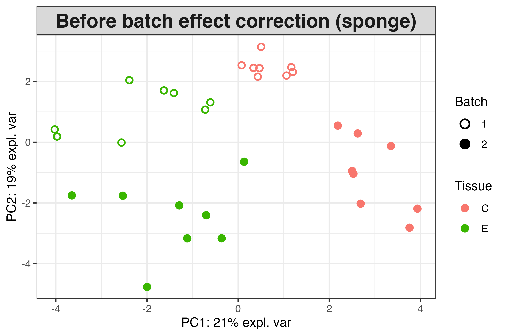
In the sponge data, 21% of the total data variance was explained by the first principal component, which highlighted a strong difference of samples across different tissues (effect of interest). The batch variation accounted for 19% of the total variance in the second component. Thus in this study, batch effects are slightly weaker than the treatment effects.
Batch correction
removeBatchEffect
sponge.mod <- model.matrix( ~ sponge.trt) # full model
sponge.rbe <- t(removeBatchEffect(t(sponge.x),
batch = sponge.batch,
design = sponge.mod))We corrected the data using removeBatchEffect.
ComBat
sponge.combat <- t(ComBat(t(sponge.x),
batch = sponge.batch,
mod = sponge.mod,
par.prior = F, prior.plots = F))We corrected the data using ComBat.
PLSDA-batch
The optimal number of components
sponge.trt.tune <- plsda(X = sponge.x, Y = sponge.trt, ncomp = 5)
sponge.trt.tune$explained_variance #1## $X
## comp 1 comp 2 comp 3 comp 4 comp 5
## 0.20207840 0.08409582 0.14275445 0.08019116 0.04516682
##
## $Y
## comp 1 comp 2 comp 3 comp 4 comp 5
## 1.00000000 0.11980397 0.03939307 0.02354395 0.01092769
sponge.batch.tune <- PLSDA_batch(X = sponge.x,
Y.trt = sponge.trt, Y.bat = sponge.batch,
ncomp.trt = 1, ncomp.bat = 5)
sponge.batch.tune$explained_variance.bat #1## $X
## comp 1 comp 2 comp 3 comp 4 comp 5
## 0.23733292 0.08412656 0.09436462 0.06814398 0.05649485
##
## $Y
## comp 1 comp 2 comp 3 comp 4 comp 5
## 1 1 1 1 1To correct the data with PLSDA-batch, we need to specify the optimal number of components associated with either treatment (ncomp.trt) or batch effects (ncomp.bat). To choose these parameters, we estimated the explained variance in the outcome (sponge.trt) on each treatment component ($Y) and similarly for the batch associated outcome (sponge.batch) and components. We chose the optimal number of components that explain 100% variance in Y, either Y.trt or Y.bat. The remainder components should only explain some (unknown) noise. For sponge data, the optimal number of components associated with either treatment or batch effects are all 1.
sponge.plsda_batch.correct <- PLSDA_batch(X = sponge.x,
Y.trt = sponge.trt, Y.bat = sponge.batch,
ncomp.trt = 1, ncomp.bat = 1)
sponge.plsda_batch <- sponge.plsda_batch.correct$X.nobatchsPLSDA-batch
The optimal number of variables to select per component
set.seed(777)
sponge.test.keepX = seq(1, 24, 1)
sponge.trt.tune.v <- tune.splsda(X = sponge.x, Y = sponge.trt,
ncomp = 1, test.keepX = sponge.test.keepX,
validation = 'Mfold', folds = 4, nrepeat = 50)
sponge.trt.tune.v$choice.keepX #1To correct the data with sPLSDA-batch, in addition to the number of components, we also need to specify the optimal number of variables to select on each treatment component (keepX.trt). For this purpose, we calculated the Balanced classification Error Rate (BER) = \(\frac{\sum_{c=1}^{C}\frac{F_c}{T_c + F_c}}{C}\)), where \(F_c\) and \(T_c\) represent the number of false and truly classified samples in the treatment group \(c, c = 1,2\), where \(C\) represents the total number of treatment groups (Tharwat 2018). The BER was evaluated through repeated cross-validation with 4 folds and 50 repeats using the "maximum" prediction distance as described in (Rohart et al. 2017) on a proposed grid of numbers of variables to select on each treatment component (sponge.test.keepX). The number of variables with the lowest BER has the strongest association with the treatment information. For sponge data, keepX.trt = 1.
sponge.splsda_batch.correct <- PLSDA_batch(X = sponge.x,
Y.trt = sponge.trt, Y.bat = sponge.batch,
ncomp.trt = 1, keepX.trt = 1,
ncomp.bat = 1)
sponge.splsda_batch <- sponge.splsda_batch.correct$X.nobatchEvaluation
PCA
sponge.pca.rbe <- pca(sponge.rbe, ncomp = 3, scale = T)
sponge.pca.combat <- pca(sponge.combat, ncomp = 3, scale = T)
sponge.pca.plsda_batch <- pca(sponge.plsda_batch, ncomp = 3, scale = T)
sponge.pca.splsda_batch <- pca(sponge.splsda_batch, ncomp = 3, scale = T)
sponge.xlim = c(-5.5,4.5)
sponge.ylim = c(-5.5,4.5)
cex = 2
plotIndiv(sponge.pca.before, group = sponge.trt,
pch = as.numeric(as.character(sponge.batch.shape)),
title = 'Before batch effect correction (sponge)', ind.names = F,
legend = T, legend.title.pch = 'Batch', pch.levels = sponge.batch,
col.per.group = pb_color(1:2), legend.title = 'Tissue', cex = cex,
xlim = sponge.xlim, ylim = sponge.ylim)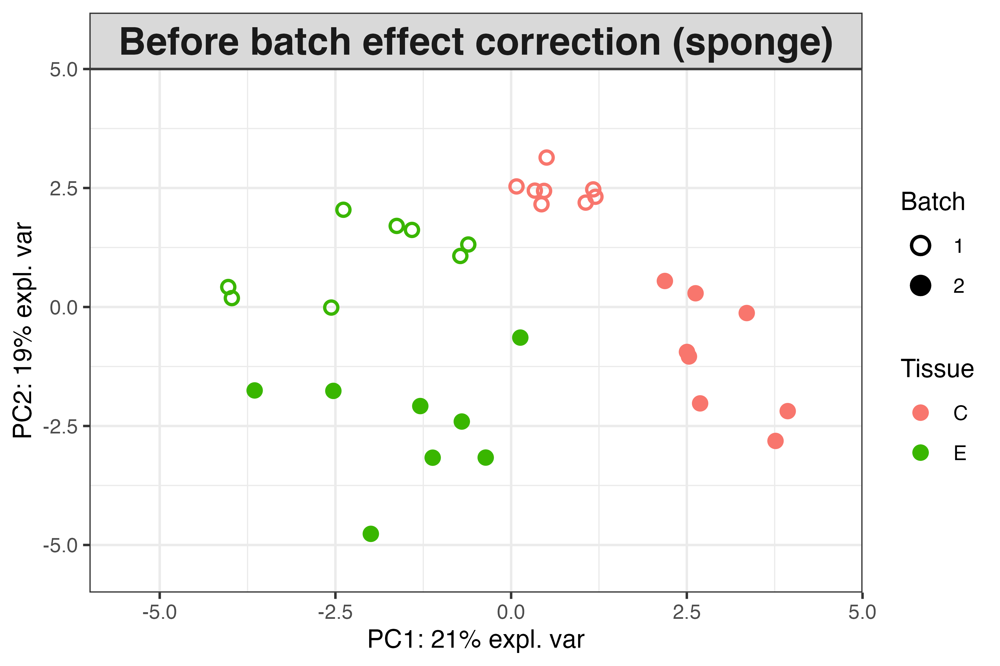
plotIndiv(sponge.pca.rbe, group = sponge.trt,
pch = as.numeric(as.character(sponge.batch.shape)),
title = 'removeBatchEffect correction (sponge)', ind.names = F,
legend = T, legend.title.pch = 'Batch', pch.levels = sponge.batch,
col.per.group = pb_color(1:2), legend.title = 'Tissue', cex = cex,
xlim = sponge.xlim, ylim = sponge.ylim)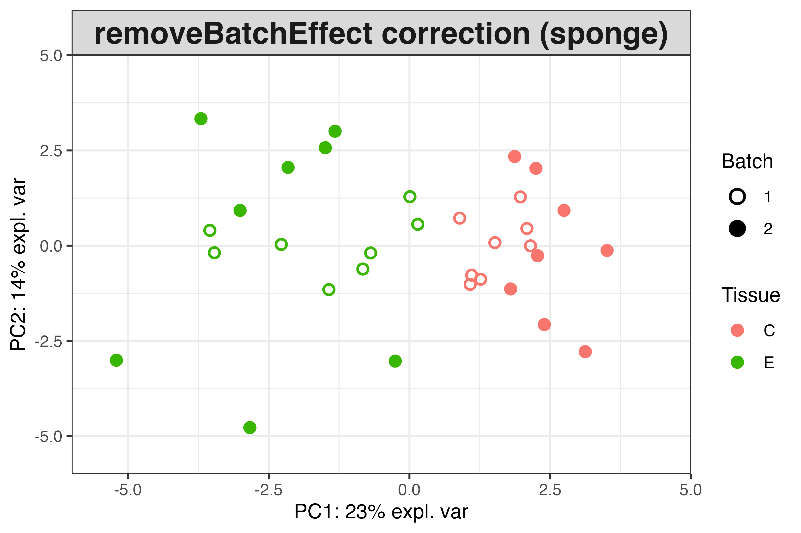
plotIndiv(sponge.pca.combat, group = sponge.trt,
pch = as.numeric(as.character(sponge.batch.shape)),
title = 'ComBat correction (sponge)', ind.names = F, legend = T,
legend.title.pch = 'Batch', pch.levels = sponge.batch,
col.per.group = pb_color(1:2), legend.title = 'Tissue', cex = cex,
xlim = sponge.xlim, ylim = sponge.ylim)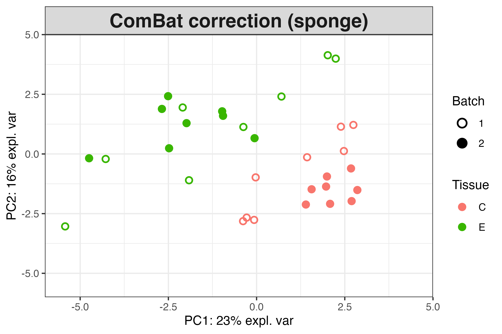
plotIndiv(sponge.pca.plsda_batch, group = sponge.trt,
pch = as.numeric(as.character(sponge.batch.shape)),
title = 'PLSDA-batch correction (sponge)', ind.names = F,
legend = T, legend.title.pch = 'Batch', pch.levels = sponge.batch,
col.per.group = pb_color(1:2), legend.title = 'Tissue', cex = cex,
xlim = sponge.xlim, ylim = sponge.ylim)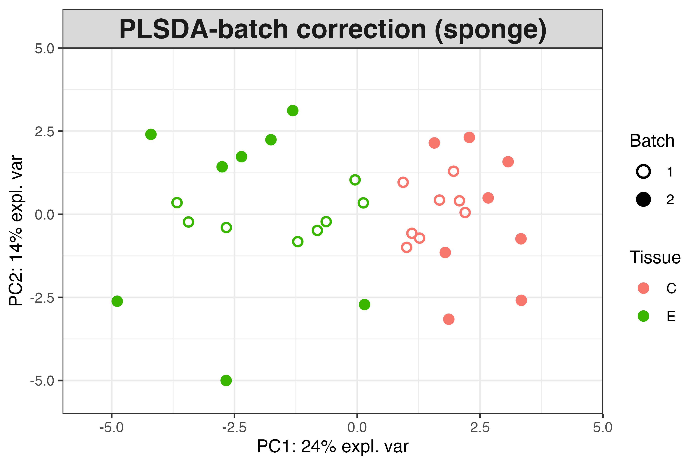
plotIndiv(sponge.pca.splsda_batch, group = sponge.trt,
pch = as.numeric(as.character(sponge.batch.shape)),
title = 'sPLSDA-batch correction (sponge)', ind.names = F,
legend = T, legend.title.pch = 'Batch', pch.levels = sponge.batch,
col.per.group = pb_color(1:2), legend.title = 'Tissue', cex = cex,
xlim = sponge.xlim, ylim = sponge.ylim)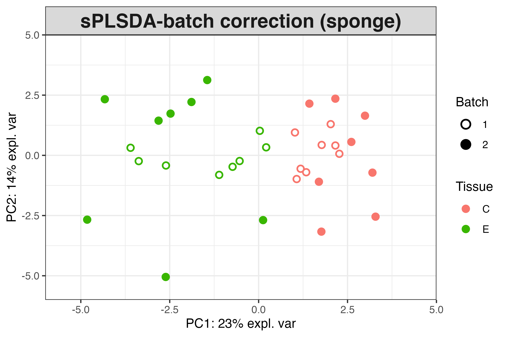
After batch correction, the difference between batches became barely distinct, except for ComBat corrected data where a clear separation of the samples from two batches for the Choanosome tissue could still be observed. The variance explained by the first principal component that separated the different tissue types was increased in all of the corrected data, with PLSDA-batch resulting in the highest proportion of variance (24%).
RDA
# first scale the data
sponge.x.s = scale(sponge.x)
sponge.rbe.s = scale(sponge.rbe)
sponge.combat.s = scale(sponge.combat)
sponge.plsda_batch.s = scale(sponge.plsda_batch)
sponge.splsda_batch.s = scale(sponge.splsda_batch)
sponge.corrected.list <- list(`Before correction` = sponge.x.s,
removeBatchEffect = sponge.rbe.s,
ComBat = sponge.combat.s,
`PLSDA-batch` = sponge.plsda_batch.s,
`sPLSDA-batch` = sponge.splsda_batch.s)
sponge.rda.prop.df <- data.frame(Treatment = NA, Intersection = NA,
Batch = NA, Residuals = NA)
Bat_Trt.factors <- data.frame(Batch = sponge.batch, Treatment = sponge.trt)
for(i in 1:length(sponge.corrected.list)){
rda.res = varpart(sponge.corrected.list[[i]], ~ Treatment, ~ Batch,
data = Bat_Trt.factors)
sponge.rda.prop.df[i, ] <- rda.res$part$indfract$Adj.R.squared
}
rownames(sponge.rda.prop.df) <- names(sponge.corrected.list)
sponge.rda.prop.df[sponge.rda.prop.df < 0] = 0
sponge.rda.prop.df <- t(apply(sponge.rda.prop.df, 1, function(x){x/sum(x)}))
partVar_plot(prop.df = sponge.rda.prop.df)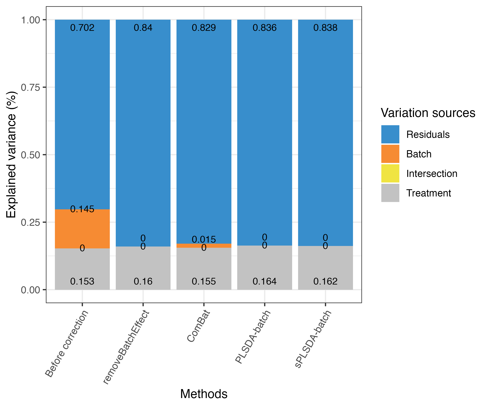
We next focused on estimating the proportion of explained variance by treatment and batch effects globally for the batch corrected data. The different methods preserved similar proportion of treatment variance and removed all batch variance, with the exception of ComBat that still retained 1.5% of batch variance.
Scatter plot
# before
sponge.r2.trt.before <- c()
for(c in 1:ncol(sponge.x.s)){
fit.res <- lm(sponge.x.s[ ,c] ~ sponge.trt)
fit.summary <- summary(fit.res)
sponge.r2.trt.before <- c(sponge.r2.trt.before, fit.summary$r.squared)
}
sponge.r2.bat.before <- c()
for(c in 1:ncol(sponge.x.s)){
fit.res <- lm(sponge.x.s[ ,c] ~ sponge.batch)
fit.summary <- summary(fit.res)
sponge.r2.bat.before <- c(sponge.r2.bat.before, fit.summary$r.squared)
}
# removeBatchEffect
sponge.r2.trt.rbe <- c()
for(c in 1:ncol(sponge.rbe.s)){
fit.res <- lm(sponge.rbe.s[ ,c] ~ sponge.trt)
fit.summary <- summary(fit.res)
sponge.r2.trt.rbe <- c(sponge.r2.trt.rbe, fit.summary$r.squared)
}
sponge.r2.bat.rbe <- c()
for(c in 1:ncol(sponge.rbe.s)){
fit.res <- lm(sponge.rbe.s[ ,c] ~ sponge.batch)
fit.summary <- summary(fit.res)
sponge.r2.bat.rbe <- c(sponge.r2.bat.rbe, fit.summary$r.squared)
}
# ComBat
sponge.r2.trt.combat <- c()
for(c in 1:ncol(sponge.combat.s)){
fit.res <- lm(sponge.combat.s[ ,c] ~ sponge.trt)
fit.summary <- summary(fit.res)
sponge.r2.trt.combat <- c(sponge.r2.trt.combat, fit.summary$r.squared)
}
sponge.r2.bat.combat <- c()
for(c in 1:ncol(sponge.combat.s)){
fit.res <- lm(sponge.combat.s[ ,c] ~ sponge.batch)
fit.summary <- summary(fit.res)
sponge.r2.bat.combat <- c(sponge.r2.bat.combat, fit.summary$r.squared)
}
# PLSDA-batch
sponge.r2.trt.plsda_batch <- c()
for(c in 1:ncol(sponge.plsda_batch.s)){
fit.res <- lm(sponge.plsda_batch.s[ ,c] ~ sponge.trt)
fit.summary <- summary(fit.res)
sponge.r2.trt.plsda_batch <- c(sponge.r2.trt.plsda_batch, fit.summary$r.squared)
}
sponge.r2.bat.plsda_batch <- c()
for(c in 1:ncol(sponge.plsda_batch.s)){
fit.res <- lm(sponge.plsda_batch.s[ ,c] ~ sponge.batch)
fit.summary <- summary(fit.res)
sponge.r2.bat.plsda_batch <- c(sponge.r2.bat.plsda_batch, fit.summary$r.squared)
}
# sPLSDA-batch
sponge.r2.trt.splsda_batch <- c()
for(c in 1:ncol(sponge.splsda_batch.s)){
fit.res <- lm(sponge.splsda_batch.s[ ,c] ~ sponge.trt)
fit.summary <- summary(fit.res)
sponge.r2.trt.splsda_batch <- c(sponge.r2.trt.splsda_batch, fit.summary$r.squared)
}
sponge.r2.bat.splsda_batch <- c()
for(c in 1:ncol(sponge.splsda_batch.s)){
fit.res <- lm(sponge.splsda_batch.s[ ,c] ~ sponge.batch)
fit.summary <- summary(fit.res)
sponge.r2.bat.splsda_batch <- c(sponge.r2.bat.splsda_batch, fit.summary$r.squared)
}
# plot
xlabs = 'R2(variable, tissue)'
ylabs = 'R2(variable, batch)'
edgex = 1
edgey = 0.8
par(mfrow = c(3,2))
plot(sponge.r2.trt.before, sponge.r2.bat.before,
main = 'Before correction', xlab = xlabs, ylab = ylabs,
xlim = c(0, edgex), ylim = c(0, edgey))
plot(sponge.r2.trt.rbe, sponge.r2.bat.rbe,
main = 'removeBatchEffect', xlab = xlabs, ylab = ylabs,
xlim = c(0, edgex), ylim = c(0, edgey))
plot(sponge.r2.trt.combat, sponge.r2.bat.combat,
main = 'ComBat', xlab = xlabs, ylab = ylabs,
xlim = c(0, edgex), ylim = c(0, edgey))
plot(sponge.r2.trt.plsda_batch, sponge.r2.bat.plsda_batch,
main = 'PLSDA-batch', xlab = xlabs, ylab = ylabs,
xlim = c(0, edgex), ylim = c(0, edgey))
plot(sponge.r2.trt.splsda_batch, sponge.r2.bat.splsda_batch,
main = 'sPLSDA-batch', xlab = xlabs, ylab = ylabs,
xlim = c(0, edgex), ylim = c(0, edgey))
par(mfrow = c(1,1)) The \(R^2\) values represent the variance explained by batch or treatment effects for each variable estimated with one-way ANOVA. All methods performed similarly, with an exception of ComBat which still included one variable with a large proportion of batch variance.
Alignment scores
The alignment scores complement the PCA results especially when batch effect removal is difficult to assess on PCA sample plots.
sponge.var = 0.95
sponge.k = 3
sponge.scores <-
c(alignment_score(sponge.x, sponge.batch, sponge.var,
sponge.k, ncomp = 20),
alignment_score(sponge.rbe, sponge.batch, sponge.var,
sponge.k, ncomp = 20),
alignment_score(sponge.combat, sponge.batch, sponge.var,
sponge.k, ncomp = 20),
alignment_score(sponge.plsda_batch, sponge.batch, sponge.var,
sponge.k, ncomp = 20),
alignment_score(sponge.splsda_batch, sponge.batch, sponge.var,
sponge.k, ncomp = 20)
)
sponge.scores.df <- data.frame(scores = sponge.scores,
methods = as.factor(c('Before correction',
'removeBatchEffect',
'ComBat',
'PLSDA-batch',
'sPLSDA-batch')))
sponge.scores.df$methods <- factor(sponge.scores.df$methods,
levels = c('sPLSDA-batch',
'PLSDA-batch',
'ComBat',
'removeBatchEffect',
'Before correction'))
ggplot() + geom_col(aes(x = sponge.scores.df$methods, y = sponge.scores.df$scores)) +
geom_text(aes(x = sponge.scores.df$methods,
y = sponge.scores.df$scores/2,
label = round(sponge.scores.df$scores, 3)),
size = 3, col = 'white') +
coord_flip() + theme_bw() + ylab('Alignment Scores') + xlab('') + ylim(0,0.4)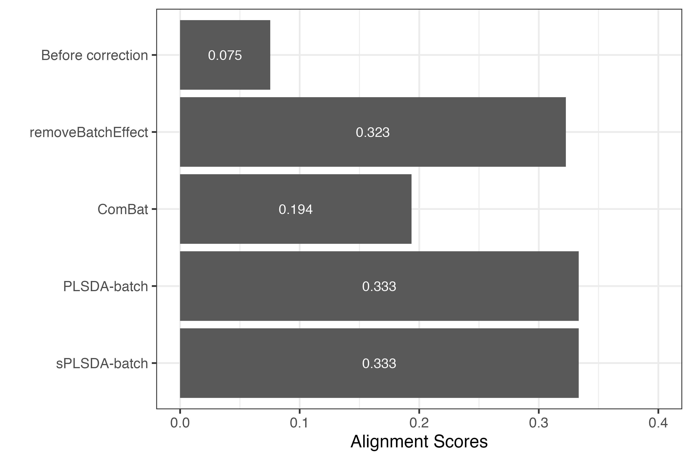
Based on alignment scores, we observed that the samples across different batches were better mixed after batch correction with different methods than before. The data corrected using PLSDA-batch and sPLSDA-batch had higher alignment scores than using removeBatchEffect and ComBat, indicating a better performance in removing batch variation. The ComBat corrected data had the lowest alignment score, which was consistent with PCA that the data still had residual batch variation remaining.
Anaerobic digestion
This study explored the microbial indicators that could improve the efficacy of anaerobic digestion (AD) bioprocess and prevent its failure (Chapleur et al. 2016). The microbiota was profiled under various conditions. The dataset includes 231 OTUs and 75 samples treated with two different ranges of phenol concentration (effects of interest). These samples were processed at five different dates, which constituted the batch effect to remove.
Load the data as follows:
data('AD_data')
ad.x <- AD_data$EgData$X.clr
ad.trt <- AD_data$EgData$Y.trt
ad.batch <- AD_data$EgData$Y.bat
ad.taxa <- AD_data$EgData$taxaFor "AD_data", we have an extra object:
ad.taxa: The taxonomic information of each OTU in ad.x matrix.
Diagnostic plots: principal component analysis
ad.pca.before <- pca(ad.x, ncomp = 3, scale = T)
ad.batch.shape <- ad.batch
levels(ad.batch.shape) <- c(1,19, 2,17,4)
plotIndiv(ad.pca.before, group = ad.trt,
pch = as.numeric(as.character(ad.batch.shape)),
title = 'Before batch effect correction (AD)', ind.names = F,
legend = T, legend.title.pch = 'Batch', pch.levels = ad.batch,
col.per.group = pb_color(3:4), legend.title = 'Treatment', cex = 2)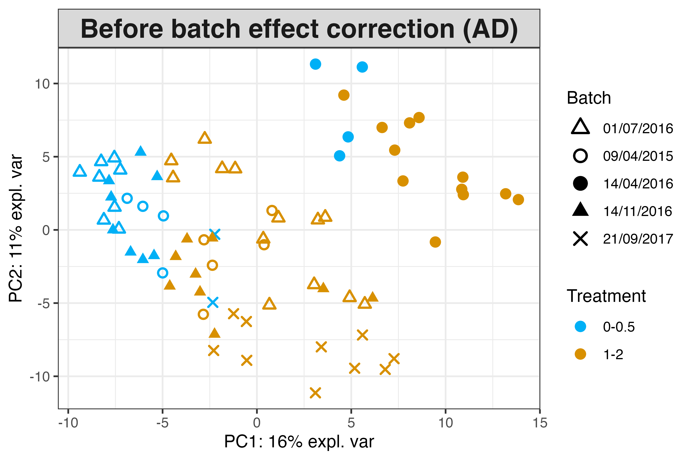
In the AD data, 16% of the total data variance was explained by the first principal component, which highlighted a strong difference of samples sequenced at 14/04/2016 and the other dates (the batch effect). The treatment variation is mostly on the second component. Thus in this study, batch effects are stronger than the treatment effects.
Batch correction
removeBatchEffect
ad.mod <- model.matrix( ~ ad.trt) # full model
ad.rbe <- t(removeBatchEffect(t(ad.x),
batch = ad.batch,
design = ad.mod))We corrected the data using removeBatchEffect.
PLSDA-batch
The optimal number of components
ad.trt.tune <- plsda(X = ad.x, Y = ad.trt, ncomp = 5)
ad.trt.tune$explained_variance #1## $X
## comp 1 comp 2 comp 3 comp 4 comp 5
## 0.14482929 0.08830005 0.05824682 0.08489088 0.03165643
##
## $Y
## comp 1 comp 2 comp 3 comp 4 comp 5
## 1.00000000 0.34131668 0.18435285 0.08323639 0.06585199
ad.batch.tune <- PLSDA_batch(X = ad.x,
Y.trt = ad.trt, Y.bat = ad.batch,
ncomp.trt = 1, ncomp.bat = 10)
ad.batch.tune$explained_variance.bat #4## $X
## comp 1 comp 2 comp 3 comp 4 comp 5 comp 6 comp 7
## 0.14017050 0.10961662 0.07910858 0.04575263 0.03404049 0.02890628 0.02896192
## comp 8 comp 9 comp 10
## 0.02153840 0.01834095 0.01425454
##
## $Y
## comp 1 comp 2 comp 3 comp 4 comp 5 comp 6 comp 7
## 0.25032597 0.25937398 0.23152335 0.25877670 0.23428008 0.24764822 0.26338150
## comp 8 comp 9 comp 10
## 0.23798138 0.01670882 0.25901906
sum(ad.batch.tune$explained_variance.bat$Y[1:4])## [1] 1To correct the AD data with PLSDA-batch, we specified 1 as the optimal number of components associated with treatment effects, and 4 as with batch effects based on the 100% variance explained in the outcome.
ad.plsda_batch.correct <- PLSDA_batch(X = ad.x,
Y.trt = ad.trt, Y.bat = ad.batch,
ncomp.trt = 1, ncomp.bat = 4)
ad.plsda_batch <- ad.plsda_batch.correct$X.nobatchsPLSDA-batch
The optimal number of variables to select per component
set.seed(777)
ad.test.keepX = c(seq(1, 10, 1), seq(20, 100, 10), seq(150, 231, 50), 231)
ad.trt.tune.v <- tune.splsda(X = ad.x, Y = ad.trt,
ncomp = 1, test.keepX = ad.test.keepX,
validation = 'Mfold', folds = 4, nrepeat = 50)
ad.trt.tune.v$choice.keepX #50
ad.splsda_batch.correct <- PLSDA_batch(X = ad.x,
Y.trt = ad.trt, Y.bat = ad.batch,
ncomp.trt = 1, keepX.trt = 50,
ncomp.bat = 4)
ad.splsda_batch <- ad.splsda_batch.correct$X.nobatchTo correct the AD data with sPLSDA-batch, in addition to the number of components, we also specified keepX.trt = 50 as the optimal number of variables to select on each treatment component using BER.
Evaluation
PCA
ad.pca.rbe <- pca(ad.rbe, ncomp = 3, scale = T)
ad.pca.combat <- pca(ad.combat, ncomp = 3, scale = T)
ad.pca.plsda_batch <- pca(ad.plsda_batch, ncomp = 3, scale = T)
ad.pca.splsda_batch <- pca(ad.splsda_batch, ncomp = 3, scale = T)
ad.xlim = c(-13,15)
ad.ylim = c(-12,12)
cex = 2
plotIndiv(ad.pca.before, group = ad.trt,
pch = as.numeric(as.character(ad.batch.shape)),
title = 'Before batch effect correction (AD)', ind.names = F,
legend = T, legend.title.pch = 'Batch', pch.levels = ad.batch,
col.per.group = pb_color(3:4), legend.title = 'Treatment', cex = cex,
xlim = ad.xlim, ylim = ad.ylim)
plotIndiv(ad.pca.rbe, group = ad.trt,
pch = as.numeric(as.character(ad.batch.shape)),
title = 'removeBatchEffect correction (AD)', ind.names = F,
legend = T, legend.title.pch = 'Batch', pch.levels = ad.batch,
col.per.group = pb_color(3:4), legend.title = 'Treatment', cex = cex,
xlim = ad.xlim, ylim = ad.ylim)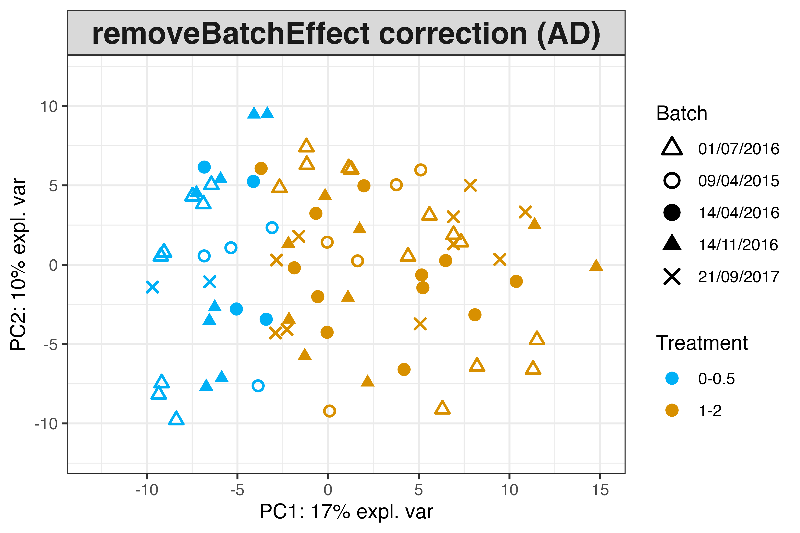
plotIndiv(ad.pca.combat, group = ad.trt,
pch = as.numeric(as.character(ad.batch.shape)),
title = 'ComBat correction (AD)', ind.names = F, legend = T,
legend.title.pch = 'Batch', pch.levels = ad.batch,
col.per.group = pb_color(3:4), legend.title = 'Treatment', cex = cex,
xlim = ad.xlim, ylim = ad.ylim)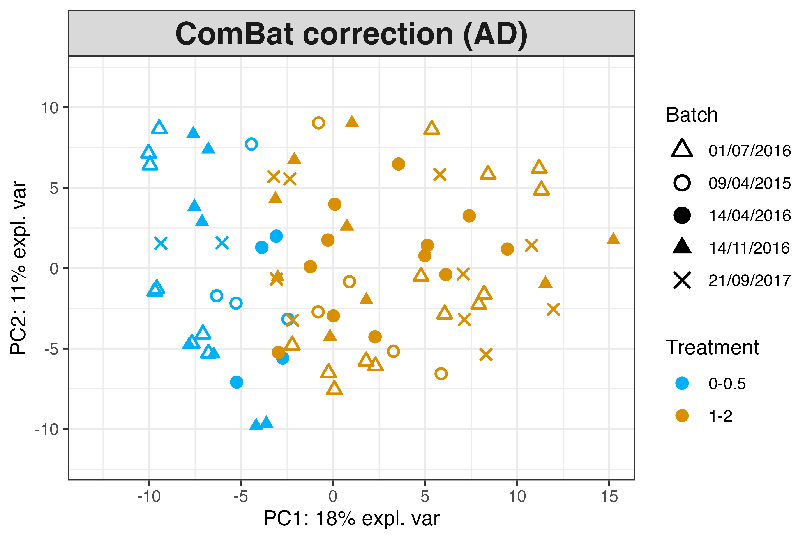
plotIndiv(ad.pca.plsda_batch, group = ad.trt,
pch = as.numeric(as.character(ad.batch.shape)),
title = 'PLSDA-batch correction (AD)', ind.names = F,
legend = T, legend.title.pch = 'Batch', pch.levels = ad.batch,
col.per.group = pb_color(3:4), legend.title = 'Treatment', cex = cex,
xlim = ad.xlim, ylim = ad.ylim)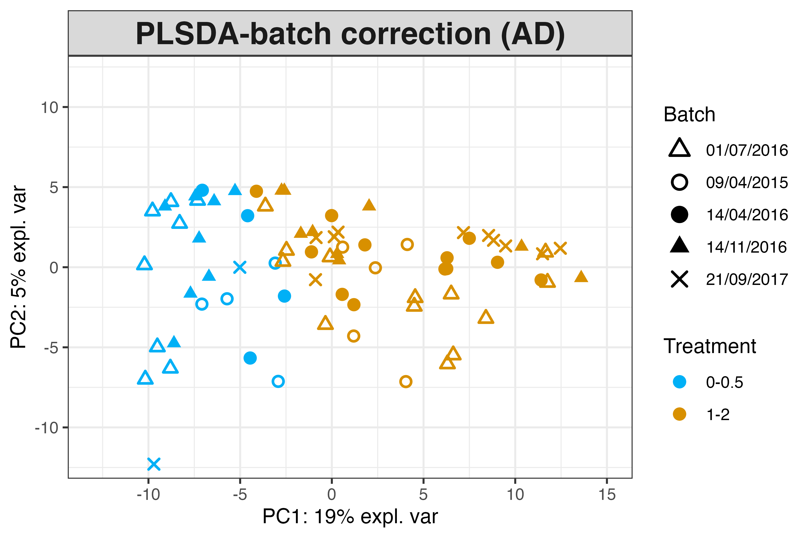
plotIndiv(ad.pca.splsda_batch, group = ad.trt,
pch = as.numeric(as.character(ad.batch.shape)),
title = 'sPLSDA-batch correction (AD)', ind.names = F,
legend = T, legend.title.pch = 'Batch', pch.levels = ad.batch,
col.per.group = pb_color(3:4), legend.title = 'Treatment', cex = cex,
xlim = ad.xlim, ylim = ad.ylim)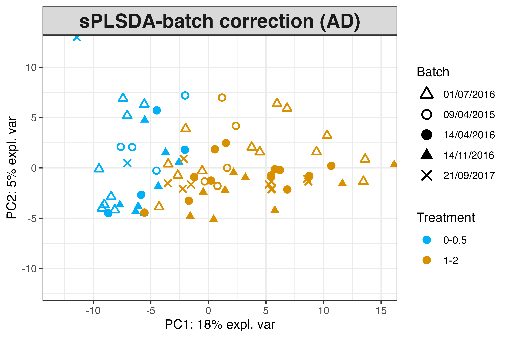
After batch correction, the difference between batches became barely distinct. The data variance explained by the first principal component that separated the different treatments was increased in all of the corrected data, with PLSDA-batch resulting in the highest proportion of variance (19%).
RDA
# first scale the data
ad.x.s = scale(ad.x)
ad.rbe.s = scale(ad.rbe)
ad.combat.s = scale(ad.combat)
ad.plsda_batch.s = scale(ad.plsda_batch)
ad.splsda_batch.s = scale(ad.splsda_batch)
ad.corrected.list <- list(`Before correction` = ad.x.s,
removeBatchEffect = ad.rbe.s,
ComBat = ad.combat.s,
`PLSDA-batch` = ad.plsda_batch.s,
`sPLSDA-batch` = ad.splsda_batch.s)
ad.rda.prop.df <- data.frame(Treatment = NA, Intersection = NA,
Batch = NA, Residuals = NA)
Bat_Trt.factors <- data.frame(Batch = ad.batch, Treatment = ad.trt)
for(i in 1:length(ad.corrected.list)){
rda.res = varpart(ad.corrected.list[[i]], ~ Treatment, ~ Batch,
data = Bat_Trt.factors)
ad.rda.prop.df[i, ] <- rda.res$part$indfract$Adj.R.squared
}
rownames(ad.rda.prop.df) <- names(ad.corrected.list)
ad.rda.prop.df[ad.rda.prop.df < 0] = 0
ad.rda.prop.df <- t(apply(ad.rda.prop.df, 1, function(x){x/sum(x)}))
partVar_plot(prop.df = ad.rda.prop.df)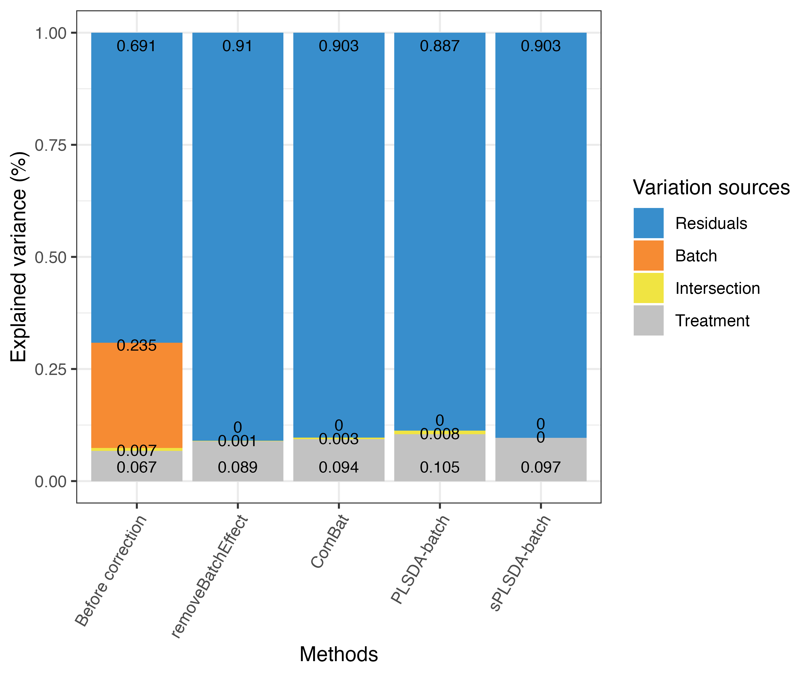
In the AD data, we observed a small amount of intersection (0.7%) between batch and treatment associated variance due to the unbalanced batch \(\times\) treatment design. As the intersection was small, unweighted PLSDA-batch and sPLSDA-batch were still applicable, and thus the weighted version was not used. PLSDA-batch preserved the largest proportion of variance explained by treatment effects, and also the largest proportion of intersectional variance. sPLSDA-batch corrected data led to a slightly higher proportion of treatment variance and an undetectable intersectional variance than the other two univariate methods.
Scatter plot
# before
ad.r2.trt.before <- c()
for(c in 1:ncol(ad.x.s)){
fit.res <- lm(ad.x.s[ ,c] ~ ad.trt)
fit.summary <- summary(fit.res)
ad.r2.trt.before <- c(ad.r2.trt.before, fit.summary$r.squared)
}
ad.r2.bat.before <- c()
for(c in 1:ncol(ad.x.s)){
fit.res <- lm(ad.x.s[ ,c] ~ ad.batch)
fit.summary <- summary(fit.res)
ad.r2.bat.before <- c(ad.r2.bat.before, fit.summary$r.squared)
}
# removeBatchEffect
ad.r2.trt.rbe <- c()
for(c in 1:ncol(ad.rbe.s)){
fit.res <- lm(ad.rbe.s[ ,c] ~ ad.trt)
fit.summary <- summary(fit.res)
ad.r2.trt.rbe <- c(ad.r2.trt.rbe, fit.summary$r.squared)
}
ad.r2.bat.rbe <- c()
for(c in 1:ncol(ad.rbe.s)){
fit.res <- lm(ad.rbe.s[ ,c] ~ ad.batch)
fit.summary <- summary(fit.res)
ad.r2.bat.rbe <- c(ad.r2.bat.rbe, fit.summary$r.squared)
}
# ComBat
ad.r2.trt.combat <- c()
for(c in 1:ncol(ad.combat.s)){
fit.res <- lm(ad.combat.s[ ,c] ~ ad.trt)
fit.summary <- summary(fit.res)
ad.r2.trt.combat <- c(ad.r2.trt.combat, fit.summary$r.squared)
}
ad.r2.bat.combat <- c()
for(c in 1:ncol(ad.combat.s)){
fit.res <- lm(ad.combat.s[ ,c] ~ ad.batch)
fit.summary <- summary(fit.res)
ad.r2.bat.combat <- c(ad.r2.bat.combat, fit.summary$r.squared)
}
# PLSDA-batch
ad.r2.trt.plsda_batch <- c()
for(c in 1:ncol(ad.plsda_batch.s)){
fit.res <- lm(ad.plsda_batch.s[ ,c] ~ ad.trt)
fit.summary <- summary(fit.res)
ad.r2.trt.plsda_batch <- c(ad.r2.trt.plsda_batch, fit.summary$r.squared)
}
ad.r2.bat.plsda_batch <- c()
for(c in 1:ncol(ad.plsda_batch.s)){
fit.res <- lm(ad.plsda_batch.s[ ,c] ~ ad.batch)
fit.summary <- summary(fit.res)
ad.r2.bat.plsda_batch <- c(ad.r2.bat.plsda_batch, fit.summary$r.squared)
}
# sPLSDA-batch
ad.r2.trt.splsda_batch <- c()
for(c in 1:ncol(ad.splsda_batch.s)){
fit.res <- lm(ad.splsda_batch.s[ ,c] ~ ad.trt)
fit.summary <- summary(fit.res)
ad.r2.trt.splsda_batch <- c(ad.r2.trt.splsda_batch, fit.summary$r.squared)
}
ad.r2.bat.splsda_batch <- c()
for(c in 1:ncol(ad.splsda_batch.s)){
fit.res <- lm(ad.splsda_batch.s[ ,c] ~ ad.batch)
fit.summary <- summary(fit.res)
ad.r2.bat.splsda_batch <- c(ad.r2.bat.splsda_batch, fit.summary$r.squared)
}
# plot
xlabs = 'R2(variable, treatment)'
ylabs = 'R2(variable, batch)'
edgex = 0.65
edgey = 1
par(mfrow = c(3,2))
plot(ad.r2.trt.before, ad.r2.bat.before,
main = 'Before correction', xlab = xlabs, ylab = ylabs,
xlim = c(0, edgex), ylim = c(0, edgey))
plot(ad.r2.trt.rbe, ad.r2.bat.rbe,
main = 'removeBatchEffect', xlab = xlabs, ylab = ylabs,
xlim = c(0, edgex), ylim = c(0, edgey))
plot(ad.r2.trt.combat, ad.r2.bat.combat,
main = 'ComBat', xlab = xlabs, ylab = ylabs,
xlim = c(0, edgex), ylim = c(0, edgey))
plot(ad.r2.trt.plsda_batch, ad.r2.bat.plsda_batch,
main = 'PLSDA-batch', xlab = xlabs, ylab = ylabs,
xlim = c(0, edgex), ylim = c(0, edgey))
plot(ad.r2.trt.splsda_batch, ad.r2.bat.splsda_batch,
main = 'sPLSDA-batch', xlab = xlabs, ylab = ylabs,
xlim = c(0, edgex), ylim = c(0, edgey))
par(mfrow = c(1,1)) The corrected data from ComBat still included a few variables with a large proportion of batch variance. When considering the sum of all variables, removeBatchEffect removed slightly more batch variance but preserved less treatment variance than our proposed approaches.
Alignment scores
ad.var = 0.95
ad.k = 8
ad.scores <-
c(alignment_score(ad.x, ad.batch, ad.var, ad.k, ncomp = 50),
alignment_score(ad.rbe, ad.batch, ad.var, ad.k, ncomp = 50),
alignment_score(ad.combat, ad.batch, ad.var, ad.k, ncomp = 50),
alignment_score(ad.plsda_batch, ad.batch, ad.var, ad.k, ncomp = 50),
alignment_score(ad.splsda_batch, ad.batch, ad.var, ad.k, ncomp = 50)
)
ad.scores.df <- data.frame(scores = ad.scores,
methods = as.factor(c('Before correction',
'removeBatchEffect',
'ComBat',
'PLSDA-batch',
'sPLSDA-batch')))
ad.scores.df$methods <- factor(ad.scores.df$methods,
levels = c('sPLSDA-batch',
'PLSDA-batch',
'ComBat',
'removeBatchEffect',
'Before correction'))
ggplot() + geom_col(aes(x = ad.scores.df$methods, y = ad.scores.df$scores)) +
geom_text(aes(x = ad.scores.df$methods,
y = ad.scores.df$scores/2,
label = round(ad.scores.df$scores, 3)), size = 3, col = 'white') +
coord_flip() + theme_bw() + ylab('Alignment Scores') + xlab('') + ylim(0,0.85)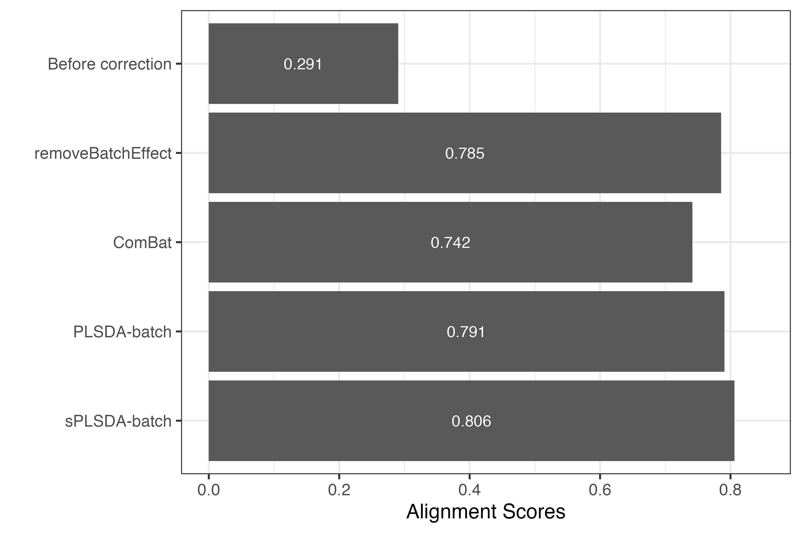
Based on alignment scores, we observed that the samples across different batches were better mixed after batch correction with different methods than before. The data corrected using PLSDA-batch and sPLSDA-batch had higher alignment scores than using removeBatchEffect and ComBat, indicating a better performance in removing batch variation. Among corrected datasets, the ComBat corrected data had the lowest alignment score.
Variable selection
ad.splsda.before <- splsda(X = ad.x, Y = ad.trt,
ncomp = 3, keepX = rep(50,3))
ad.splsda.rbe <- splsda(X = ad.rbe, Y = ad.trt,
ncomp = 3, keepX = rep(50,3))
ad.splsda.combat <- splsda(X = ad.combat, Y = ad.trt,
ncomp = 3, keepX = rep(50,3))
ad.splsda.plsda_batch <- splsda(X = ad.plsda_batch, Y = ad.trt,
ncomp = 3, keepX = rep(50,3))
ad.splsda.splsda_batch <- splsda(X = ad.splsda_batch, Y = ad.trt,
ncomp = 3, keepX = rep(50,3))
ad.select.before <- selectVar(ad.splsda.before, comp = 1)$name
ad.select.rbe <- selectVar(ad.splsda.rbe, comp = 1)$name
ad.select.combat <- selectVar(ad.splsda.combat, comp = 1)$name
ad.select.plsda_batch <- selectVar(ad.splsda.plsda_batch, comp = 1)$name
ad.select.splsda_batch <- selectVar(ad.splsda.splsda_batch, comp = 1)$name
ad.splsda.select <- list(`Before correction` = ad.select.before,
`removeBatchEffect` = ad.select.rbe,
ComBat = ad.select.combat,
`PLSDA-batch` = ad.select.plsda_batch,
`sPLSDA-batch` = ad.select.splsda_batch)
ad.splsda.upsetR <- fromList(ad.splsda.select)
upset(ad.splsda.upsetR, main.bar.color = 'gray36',
sets.bar.color = pb_color(c(25:22,20)), matrix.color = 'gray36',
order.by = 'freq', empty.intersections = 'on',
queries = list(list(query = intersects, params = list('Before correction'),
color = pb_color(20), active = T),
list(query = intersects, params = list('removeBatchEffect'),
color = pb_color(22), active = T),
list(query = intersects, params = list('ComBat'),
color = pb_color(23), active = T),
list(query = intersects, params = list('PLSDA-batch'),
color = pb_color(24), active = T),
list(query = intersects, params = list('sPLSDA-batch'),
color = pb_color(25), active = T)))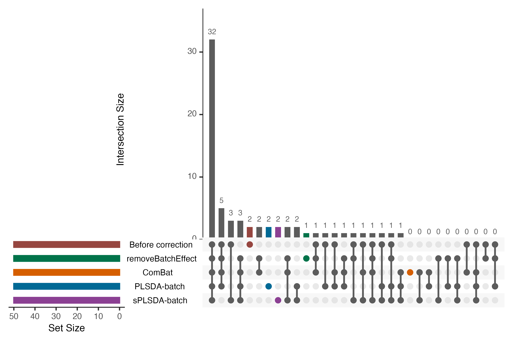
###############################
# without original data
ad.splsda.select2 <- list(`removeBatchEffect` = ad.select.rbe,
ComBat = ad.select.combat,
`PLSDA-batch` = ad.select.plsda_batch,
`sPLSDA-batch` = ad.select.splsda_batch)
ad.splsda.upsetR2 <- fromList(ad.splsda.select2)
upset(ad.splsda.upsetR2, main.bar.color = 'gray36',
sets.bar.color = pb_color(c(25:22)), matrix.color = 'gray36',
order.by = 'freq', empty.intersections = 'on',
queries = list(list(query = intersects, params = list('removeBatchEffect'),
color = pb_color(22), active = T),
list(query = intersects, params = list('ComBat'),
color = pb_color(23), active = T),
list(query = intersects, params = list('PLSDA-batch'),
color = pb_color(24), active = T),
list(query = intersects, params = list('sPLSDA-batch'),
color = pb_color(25), active = T)))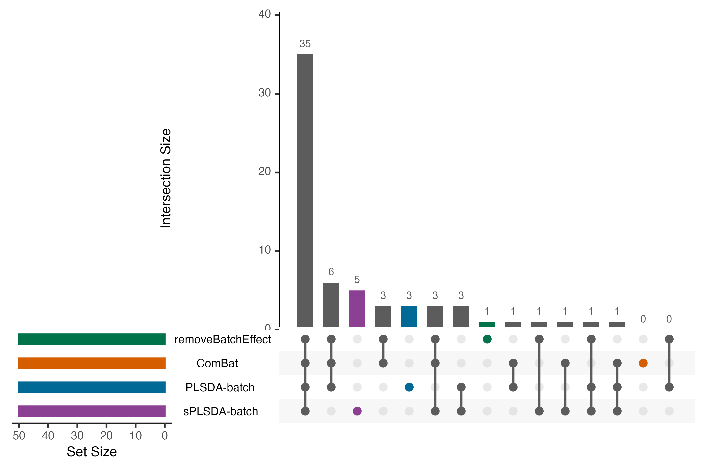
We applied sPLSDA to select 20% of the total number of OTUs in the data. We then compared the OTU selections before and after batch effect correction with different methods.
ad.splsda.select.overlap <- venn(ad.splsda.select, show.plot = F)
ad.inters.splsda <- attr(ad.splsda.select.overlap, 'intersections')
ad.inters.splsda.taxa <- lapply(ad.inters.splsda,
FUN = function(x){as.data.frame(ad.taxa[x, ])})
capture.output(ad.inters.splsda.taxa,
file = "GeneratedData/ADselected_50_splsda.txt")We also saved the taxonomic information of intersectional OTUs into a txt file.
High fat high sugar diet
This study aimed to investigate the effect of high fat high sugar (HFHS) diet on the mouse microbiome (Susin et al. 2020). This dataset includes 419 OTUs and 54 samples treated with two types of diets (HFHS vs. normal) and housed in two different facilities (TRI and PACE). The diet variation is the treatment effect, while the facility variation constitutes the potential batch effect. The actual batch effect in this dataset is weak, and enables to assess whether batch correction methods are able to preserve treatment variation in this context.
Load the data as follows:
data('HFHS_data')
hfhs.x <- HFHS_data$EgData$X.clr
hfhs.trt <- HFHS_data$EgData$Y.trt
hfhs.batch <- HFHS_data$EgData$Y.bat
hfhs.taxa <- HFHS_data$EgData$taxaDiagnostic plots: principal component analysis
hfhs.pca.before <- pca(hfhs.x, ncomp = 3, scale = T)
hfhs.batch.shape <- hfhs.batch
levels(hfhs.batch.shape) <- c(1,19)
plotIndiv(hfhs.pca.before, group = hfhs.trt,
pch = as.numeric(as.character(hfhs.batch.shape)),
title = 'Before batch effect correction (HFHS)', ind.names = F,
legend = T, legend.title.pch = 'Batch', pch.levels = hfhs.batch,
col.per.group = pb_color(5:6), legend.title = 'Treatment', cex = 2)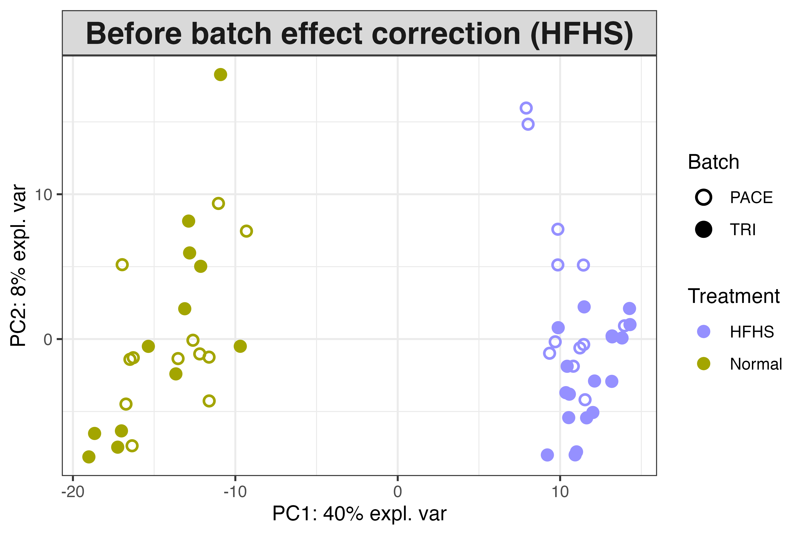
In the HFHS data, 40% of the total data variance was explained by the first principal component, which highlighted a strong difference of samples treated with HFHS and normal diets (the treatment effect). We did not observe any batch variation.
Batch correction
removeBatchEffect
hfhs.mod <- model.matrix( ~ hfhs.trt) # full model
hfhs.rbe <- t(removeBatchEffect(t(hfhs.x),
batch = hfhs.batch,
design = hfhs.mod))We corrected the data using removeBatchEffect.
ComBat
hfhs.combat <- t(ComBat(t(hfhs.x),
batch = hfhs.batch,
mod = hfhs.mod,
par.prior = F, prior.plots = F))We corrected the data using ComBat.
PLSDA-batch
The optimal number of components
hfhs.trt.tune <- plsda(X = hfhs.x, Y = hfhs.trt, ncomp = 5)
hfhs.trt.tune$explained_variance #1## $X
## comp 1 comp 2 comp 3 comp 4 comp 5
## 0.39617384 0.05282050 0.05787826 0.03715006 0.03058348
##
## $Y
## comp 1 comp 2 comp 3 comp 4 comp 5
## 1.000000000 0.026871404 0.010196873 0.005078078 0.002684480
hfhs.batch.tune <- PLSDA_batch(X = hfhs.x,
Y.trt = hfhs.trt, Y.bat = hfhs.batch,
ncomp.trt = 1, ncomp.bat = 4)
hfhs.batch.tune$explained_variance.bat #1## $X
## comp 1 comp 2 comp 3 comp 4
## 0.08937858 0.09894620 0.04924016 0.04703057
##
## $Y
## comp 1 comp 2 comp 3 comp 4
## 1.0000000 0.9989806 0.9920635 0.9989806To correct the HFHS data with PLSDA-batch, we specified 1 as the optimal number of components associated with either treatment or batch effects based on the 100% variance explained in the outcome.
hfhs.plsda_batch.correct <- PLSDA_batch(X = hfhs.x,
Y.trt = hfhs.trt, Y.bat = hfhs.batch,
ncomp.trt = 1, ncomp.bat = 1)
hfhs.plsda_batch <- hfhs.plsda_batch.correct$X.nobatchsPLSDA-batch
The optimal number of variables to select per component
set.seed(777)
hfhs.test.keepX = c(seq(10, 100, 10), seq(120, 300, 20), seq(350, 419, 50), 419)
hfhs.trt.tune.v <- tune.splsda(X = hfhs.x, Y = hfhs.trt,
ncomp = 1, test.keepX = hfhs.test.keepX,
validation = 'Mfold', folds = 4, nrepeat = 50)
hfhs.trt.tune.v$choice.keepX #10
hfhs.splsda_batch.correct <- PLSDA_batch(X = hfhs.x,
Y.trt = hfhs.trt, Y.bat = hfhs.batch,
ncomp.trt = 1, keepX.trt = 10,
ncomp.bat = 1)
hfhs.splsda_batch <- hfhs.splsda_batch.correct$X.nobatchTo correct the HFHS data with sPLSDA-batch, in addition to the number of components, we also specified keepX.trt = 10 as the optimal number of variables to select on each treatment component using BER.
Evaluation
PCA
hfhs.pca.rbe <- pca(hfhs.rbe, ncomp = 3, scale = T)
hfhs.pca.combat <- pca(hfhs.combat, ncomp = 3, scale = T)
hfhs.pca.plsda_batch <- pca(hfhs.plsda_batch, ncomp = 3, scale = T)
hfhs.pca.splsda_batch <- pca(hfhs.splsda_batch, ncomp = 3, scale = T)
hfhs.xlim = c(-22,17)
hfhs.ylim = c(-23,20)
cex = 2
plotIndiv(hfhs.pca.before, group = hfhs.trt,
pch = as.numeric(as.character(hfhs.batch.shape)),
title = 'Before batch effect correction (HFHS)', ind.names = F,
legend = T, legend.title.pch = 'Batch', pch.levels = hfhs.batch,
col.per.group = pb_color(5:6), legend.title = 'Treatment', cex = cex,
xlim = hfhs.xlim, ylim = hfhs.ylim)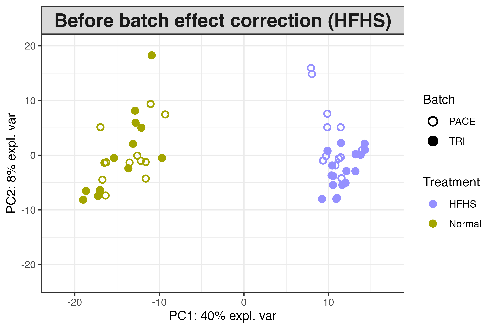
plotIndiv(hfhs.pca.rbe, group = hfhs.trt,
pch = as.numeric(as.character(hfhs.batch.shape)),
title = 'removeBatchEffect correction (HFHS)', ind.names = F,
legend = T, legend.title.pch = 'Batch', pch.levels = hfhs.batch,
col.per.group = pb_color(5:6), legend.title = 'Treatment', cex = cex,
xlim = hfhs.xlim, ylim = hfhs.ylim)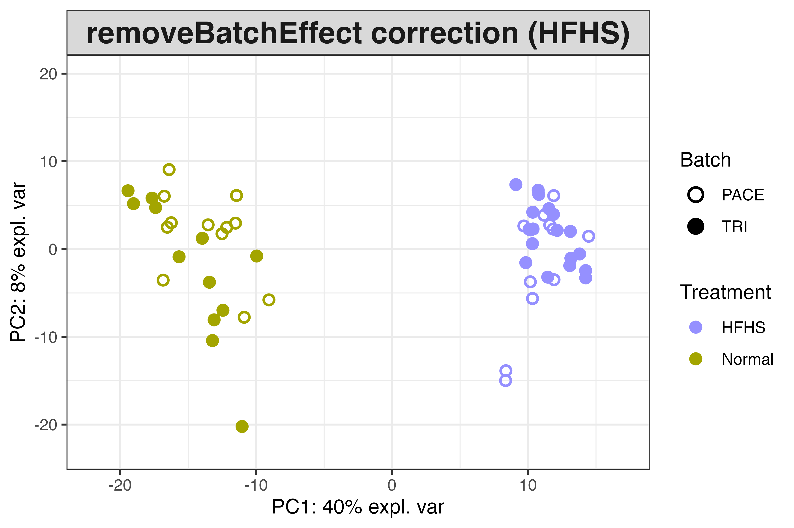
plotIndiv(hfhs.pca.combat, group = hfhs.trt,
pch = as.numeric(as.character(hfhs.batch.shape)),
title = 'ComBat correction (HFHS)', ind.names = F, legend = T,
legend.title.pch = 'Batch', pch.levels = hfhs.batch,
col.per.group = pb_color(5:6), legend.title = 'Treatment', cex = cex,
xlim = hfhs.xlim, ylim = hfhs.ylim)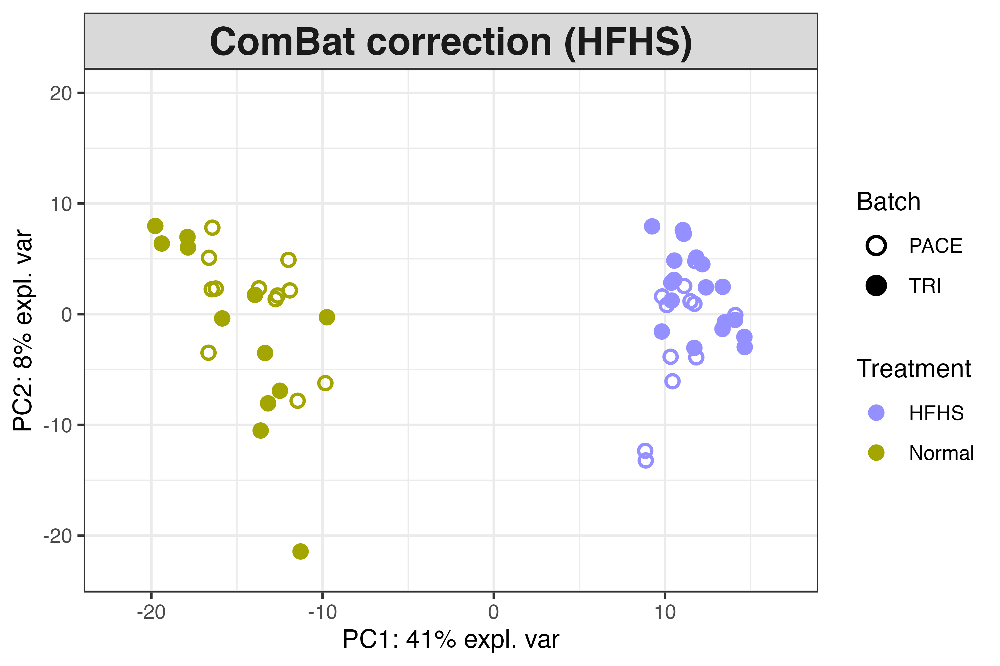
plotIndiv(hfhs.pca.plsda_batch, group = hfhs.trt,
pch = as.numeric(as.character(hfhs.batch.shape)),
title = 'PLSDA-batch correction (HFHS)', ind.names = F,
legend = T, legend.title.pch = 'Batch', pch.levels = hfhs.batch,
col.per.group = pb_color(5:6), legend.title = 'Treatment', cex = cex,
xlim = hfhs.xlim, ylim = hfhs.ylim)
plotIndiv(hfhs.pca.splsda_batch, group = hfhs.trt,
pch = as.numeric(as.character(hfhs.batch.shape)),
title = 'sPLSDA-batch correction (HFHS)', ind.names = F,
legend = T, legend.title.pch = 'Batch', pch.levels = hfhs.batch,
col.per.group = pb_color(5:6), legend.title = 'Treatment', cex = cex,
xlim = hfhs.xlim, ylim = hfhs.ylim)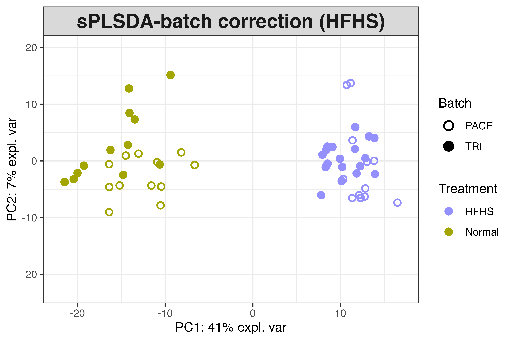
When batch variation was not observed on a PCA plot before batch correction, the proportion of variance explained by the first principal component (related to treatment effects) before and after batch correction was similar, indicating that treatment variation was preserved. Thus, batch correction methods are still relevant in the case where no batch effect is present.
RDA
# first scale the data
hfhs.x.s = scale(hfhs.x)
hfhs.rbe.s = scale(hfhs.rbe)
hfhs.combat.s = scale(hfhs.combat)
hfhs.plsda_batch.s = scale(hfhs.plsda_batch)
hfhs.splsda_batch.s = scale(hfhs.splsda_batch)
hfhs.corrected.list <- list(`Before correction` = hfhs.x.s,
removeBatchEffect = hfhs.rbe.s,
ComBat = hfhs.combat.s,
`PLSDA-batch` = hfhs.plsda_batch.s,
`sPLSDA-batch` = hfhs.splsda_batch.s)
hfhs.rda.prop.df <- data.frame(Treatment = NA, Intersection = NA,
Batch = NA, Residuals = NA)
Bat_Trt.factors <- data.frame(Batch = hfhs.batch, Treatment = hfhs.trt)
for(i in 1:length(hfhs.corrected.list)){
rda.res = varpart(hfhs.corrected.list[[i]], ~ Treatment, ~ Batch,
data = Bat_Trt.factors)
hfhs.rda.prop.df[i, ] <- rda.res$part$indfract$Adj.R.squared
}
rownames(hfhs.rda.prop.df) <- names(hfhs.corrected.list)
hfhs.rda.prop.df[hfhs.rda.prop.df < 0] = 0
hfhs.rda.prop.df <- t(apply(hfhs.rda.prop.df, 1, function(x){x/sum(x)}))
partVar_plot(prop.df = hfhs.rda.prop.df)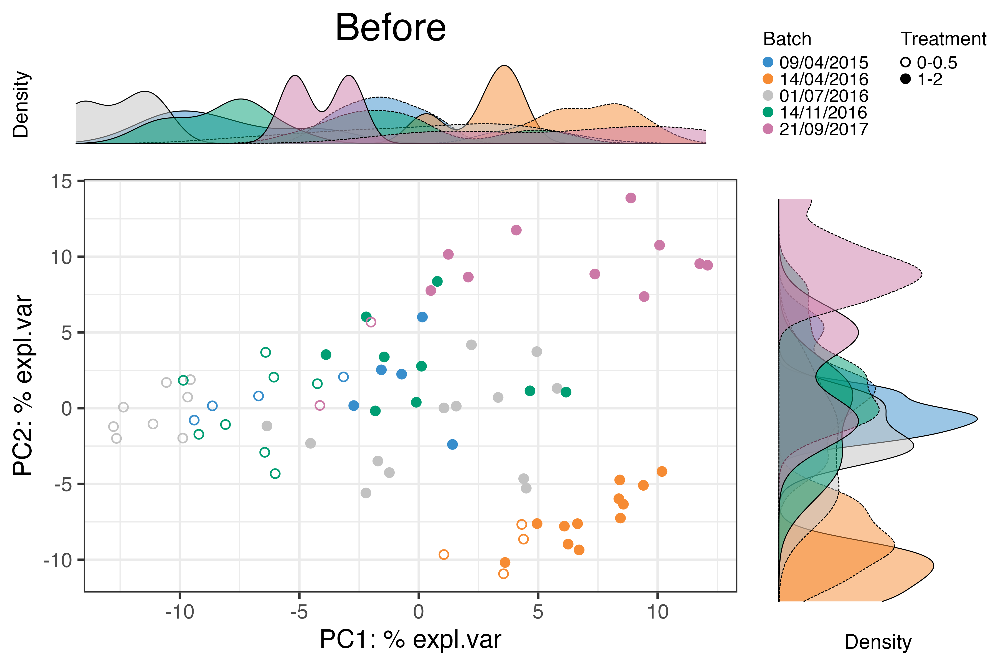
In the HFHS data where no batch variation was observed on the PCA plot, we still detected 1.8% of the variance explained by batch effects. The differences of preserved treatment variance and removed batch variance from the different corrected data were small.
Scatter plot
# before
hfhs.r2.trt.before <- c()
for(c in 1:ncol(hfhs.x.s)){
fit.res <- lm(hfhs.x.s[ ,c] ~ hfhs.trt)
fit.summary <- summary(fit.res)
hfhs.r2.trt.before <- c(hfhs.r2.trt.before, fit.summary$r.squared)
}
hfhs.r2.bat.before <- c()
for(c in 1:ncol(hfhs.x.s)){
fit.res <- lm(hfhs.x.s[ ,c] ~ hfhs.batch)
fit.summary <- summary(fit.res)
hfhs.r2.bat.before <- c(hfhs.r2.bat.before, fit.summary$r.squared)
}
# removeBatchEffect
hfhs.r2.trt.rbe <- c()
for(c in 1:ncol(hfhs.rbe.s)){
fit.res <- lm(hfhs.rbe.s[ ,c] ~ hfhs.trt)
fit.summary <- summary(fit.res)
hfhs.r2.trt.rbe <- c(hfhs.r2.trt.rbe, fit.summary$r.squared)
}
hfhs.r2.bat.rbe <- c()
for(c in 1:ncol(hfhs.rbe.s)){
fit.res <- lm(hfhs.rbe.s[ ,c] ~ hfhs.batch)
fit.summary <- summary(fit.res)
hfhs.r2.bat.rbe <- c(hfhs.r2.bat.rbe, fit.summary$r.squared)
}
# ComBat
hfhs.r2.trt.combat <- c()
for(c in 1:ncol(hfhs.combat.s)){
fit.res <- lm(hfhs.combat.s[ ,c] ~ hfhs.trt)
fit.summary <- summary(fit.res)
hfhs.r2.trt.combat <- c(hfhs.r2.trt.combat, fit.summary$r.squared)
}
hfhs.r2.bat.combat <- c()
for(c in 1:ncol(hfhs.combat.s)){
fit.res <- lm(hfhs.combat.s[ ,c] ~ hfhs.batch)
fit.summary <- summary(fit.res)
hfhs.r2.bat.combat <- c(hfhs.r2.bat.combat, fit.summary$r.squared)
}
# PLSDA-batch
hfhs.r2.trt.plsda_batch <- c()
for(c in 1:ncol(hfhs.plsda_batch.s)){
fit.res <- lm(hfhs.plsda_batch.s[ ,c] ~ hfhs.trt)
fit.summary <- summary(fit.res)
hfhs.r2.trt.plsda_batch <- c(hfhs.r2.trt.plsda_batch, fit.summary$r.squared)
}
hfhs.r2.bat.plsda_batch <- c()
for(c in 1:ncol(hfhs.plsda_batch.s)){
fit.res <- lm(hfhs.plsda_batch.s[ ,c] ~ hfhs.batch)
fit.summary <- summary(fit.res)
hfhs.r2.bat.plsda_batch <- c(hfhs.r2.bat.plsda_batch, fit.summary$r.squared)
}
# sPLSDA-batch
hfhs.r2.trt.splsda_batch <- c()
for(c in 1:ncol(hfhs.splsda_batch.s)){
fit.res <- lm(hfhs.splsda_batch.s[ ,c] ~ hfhs.trt)
fit.summary <- summary(fit.res)
hfhs.r2.trt.splsda_batch <- c(hfhs.r2.trt.splsda_batch, fit.summary$r.squared)
}
hfhs.r2.bat.splsda_batch <- c()
for(c in 1:ncol(hfhs.splsda_batch.s)){
fit.res <- lm(hfhs.splsda_batch.s[ ,c] ~ hfhs.batch)
fit.summary <- summary(fit.res)
hfhs.r2.bat.splsda_batch <- c(hfhs.r2.bat.splsda_batch, fit.summary$r.squared)
}
# plot
xlabs = 'R2(variable, treatment)'
ylabs = 'R2(variable, batch)'
edgex = 1
edgey = 0.6
par(mfrow = c(3,2))
plot(hfhs.r2.trt.before, hfhs.r2.bat.before,
main = 'Before correction', xlab = xlabs, ylab = ylabs,
xlim = c(0, edgex), ylim = c(0, edgey))
plot(hfhs.r2.trt.rbe, hfhs.r2.bat.rbe,
main = 'removeBatchEffect', xlab = xlabs, ylab = ylabs,
xlim = c(0, edgex), ylim = c(0, edgey))
plot(hfhs.r2.trt.combat, hfhs.r2.bat.combat,
main = 'ComBat', xlab = xlabs, ylab = ylabs,
xlim = c(0, edgex), ylim = c(0, edgey))
plot(hfhs.r2.trt.plsda_batch, hfhs.r2.bat.plsda_batch,
main = 'PLSDA-batch', xlab = xlabs, ylab = ylabs,
xlim = c(0, edgex), ylim = c(0, edgey))
plot(hfhs.r2.trt.splsda_batch, hfhs.r2.bat.splsda_batch,
main = 'sPLSDA-batch', xlab = xlabs, ylab = ylabs,
xlim = c(0, edgex), ylim = c(0, edgey))
par(mfrow = c(1,1)) Combat corrected data included one variable with a large proportion of batch variance. Compared to our proposed approaches, removeBatchEffect removed more batch variance.
Alignment scores
hfhs.var = 0.95
hfhs.k = 5
hfhs.scores <-
c(alignment_score(hfhs.x, hfhs.batch, hfhs.var, hfhs.k, ncomp = 50),
alignment_score(hfhs.rbe, hfhs.batch, hfhs.var, hfhs.k, ncomp = 50),
alignment_score(hfhs.combat, hfhs.batch, hfhs.var, hfhs.k, ncomp = 50),
alignment_score(hfhs.plsda_batch, hfhs.batch, hfhs.var, hfhs.k, ncomp = 50),
alignment_score(hfhs.splsda_batch, hfhs.batch, hfhs.var, hfhs.k, ncomp = 50)
)
hfhs.scores.df <- data.frame(scores = hfhs.scores,
methods = as.factor(c('Before correction',
'removeBatchEffect',
'ComBat',
'PLSDA-batch',
'sPLSDA-batch')))
hfhs.scores.df$methods <- factor(hfhs.scores.df$methods,
levels = c('sPLSDA-batch',
'PLSDA-batch',
'ComBat',
'removeBatchEffect',
'Before correction'))
ggplot() + geom_col(aes(x = hfhs.scores.df$methods, y = hfhs.scores.df$scores)) +
geom_text(aes(x = hfhs.scores.df$methods,
y = hfhs.scores.df$scores/2,
label = round(hfhs.scores.df$scores, 3)), size = 3, col = 'white') +
coord_flip() + theme_bw() + ylab('Alignment Scores') + xlab('') + ylim(0,0.4)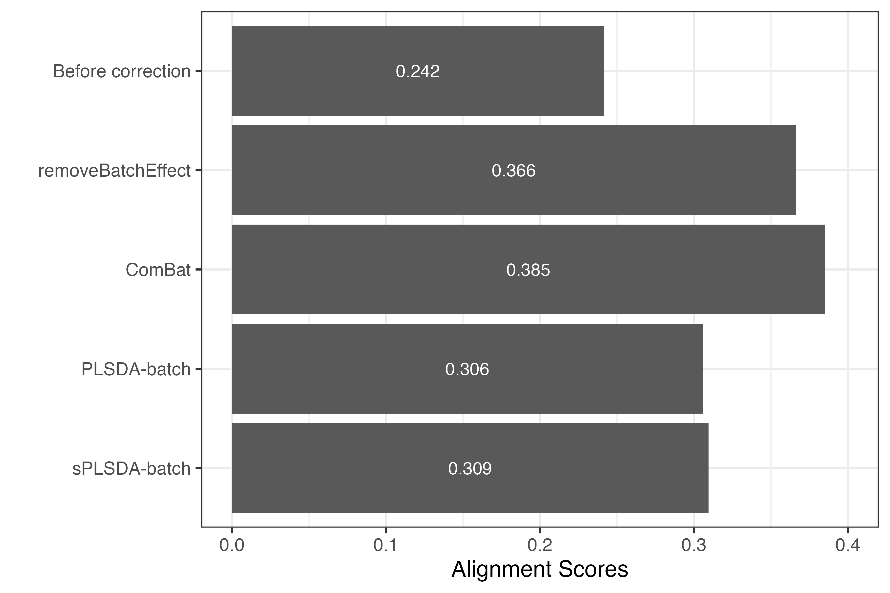
In the case of an undetected batch effect, such as the HFHS data, the corrected data from PLSDA-batch and sPLSDA-batch had lower alignment scores than those from removeBatchEffect and ComBat. However, the other assessment measures we used suggested that our methods removed sufficient batch variation. Therefore, it is possible that PLSDA-batch and sPLSDA-batch removed more sampling noise, leading to a decrease in total variance of the corrected data and more emphasis on batch variance. In the case of weak batch effect, the alignment scores may not be fully appropriate.
Variable selection
hfhs.splsda.before <- splsda(X = hfhs.x, Y = hfhs.trt,
ncomp = 3, keepX = rep(80,3))
hfhs.splsda.rbe <- splsda(X = hfhs.rbe, Y = hfhs.trt,
ncomp = 3, keepX = rep(80,3))
hfhs.splsda.combat <- splsda(X = hfhs.combat, Y = hfhs.trt,
ncomp = 3, keepX = rep(80,3))
hfhs.splsda.plsda_batch <- splsda(X = hfhs.plsda_batch, Y = hfhs.trt,
ncomp = 3, keepX = rep(80,3))
hfhs.splsda.splsda_batch <- splsda(X = hfhs.splsda_batch, Y = hfhs.trt,
ncomp = 3, keepX = rep(80,3))
hfhs.select.before <- selectVar(hfhs.splsda.before, comp = 1)$name
hfhs.select.rbe <- selectVar(hfhs.splsda.rbe, comp = 1)$name
hfhs.select.combat <- selectVar(hfhs.splsda.combat, comp = 1)$name
hfhs.select.plsda_batch <- selectVar(hfhs.splsda.plsda_batch, comp = 1)$name
hfhs.select.splsda_batch <- selectVar(hfhs.splsda.splsda_batch, comp = 1)$name
hfhs.splsda.select <- list(`Before correction` = hfhs.select.before,
`removeBatchEffect` = hfhs.select.rbe,
ComBat = hfhs.select.combat,
`PLSDA-batch` = hfhs.select.plsda_batch,
`sPLSDA-batch` = hfhs.select.splsda_batch)
hfhs.splsda.upsetR <- fromList(hfhs.splsda.select)
upset(hfhs.splsda.upsetR, main.bar.color = 'gray36',
sets.bar.color = pb_color(c(25:22,20)), matrix.color = 'gray36',
order.by = 'freq', empty.intersections = 'on',
queries = list(list(query = intersects, params = list('Before correction'),
color = pb_color(20), active = T),
list(query = intersects, params = list('removeBatchEffect'),
color = pb_color(22), active = T),
list(query = intersects, params = list('ComBat'),
color = pb_color(23), active = T),
list(query = intersects, params = list('PLSDA-batch'),
color = pb_color(24), active = T),
list(query = intersects, params = list('sPLSDA-batch'),
color = pb_color(25), active = T)))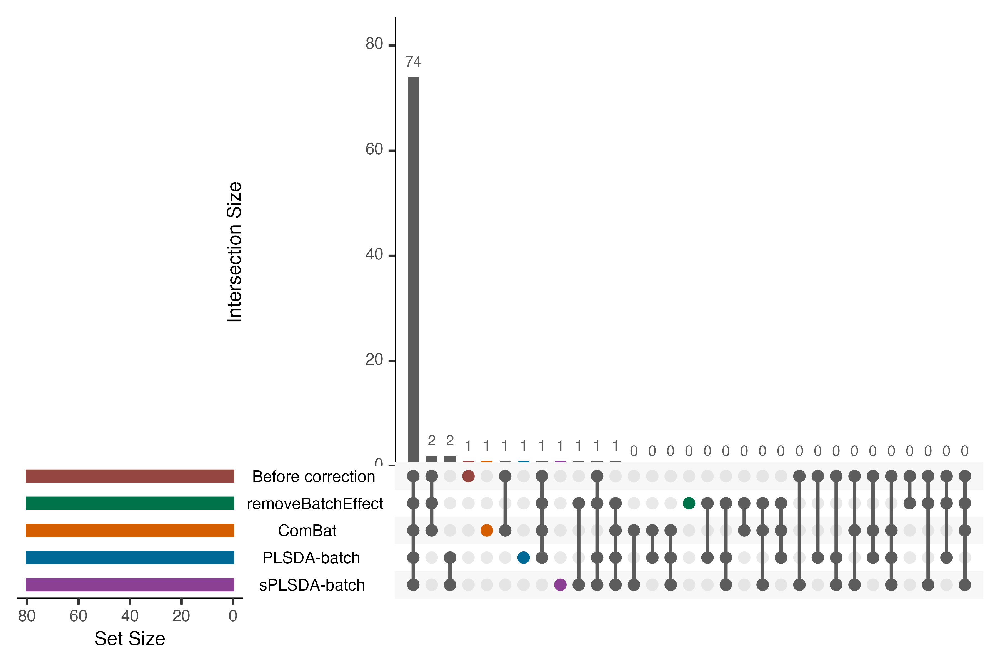
###############################
# without original data
hfhs.splsda.select2 <- list(`removeBatchEffect` = hfhs.select.rbe,
ComBat = hfhs.select.combat,
`PLSDA-batch` = hfhs.select.plsda_batch,
`sPLSDA-batch` = hfhs.select.splsda_batch)
hfhs.splsda.upsetR2 <- fromList(hfhs.splsda.select2)
upset(hfhs.splsda.upsetR2, main.bar.color = 'gray36',
sets.bar.color = pb_color(c(25:22)), matrix.color = 'gray36',
order.by = 'freq', empty.intersections = 'on',
queries = list(list(query = intersects, params = list('removeBatchEffect'),
color = pb_color(22), active = T),
list(query = intersects, params = list('ComBat'),
color = pb_color(23), active = T),
list(query = intersects, params = list('PLSDA-batch'),
color = pb_color(24), active = T),
list(query = intersects, params = list('sPLSDA-batch'),
color = pb_color(25), active = T)))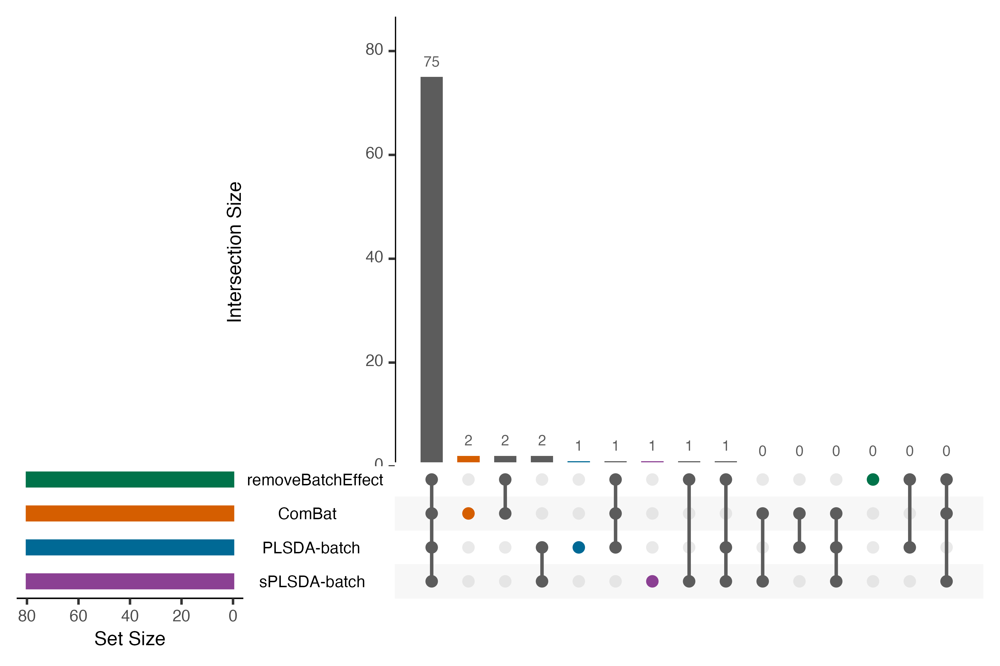
We applied sPLSDA to select 20% of the total number of OTUs in the data. We then compared the OTU selections before and after batch effect correction with different methods.
hfhs.splsda.select.overlap <- venn(hfhs.splsda.select, show.plot = F)
hfhs.inters.splsda <- attr(hfhs.splsda.select.overlap, 'intersections')
hfhs.inters.splsda.taxa <- lapply(hfhs.inters.splsda,
FUN = function(x){as.data.frame(hfhs.taxa[x, ])})
capture.output(hfhs.inters.splsda.taxa,
file = "GeneratedData/HFHSselected_50_splsda.txt")We also saved the taxonomic information of intersectional OTUs into a txt file.
References
Chapleur, Olivier, Céline Madigou, Raphaël Civade, Yohan Rodolphe, Laurent Mazéas, and Théodore Bouchez. 2016. “Increasing Concentrations of Phenol Progressively Affect Anaerobic Digestion of Cellulose and Associated Microbial Communities.” Biodegradation 27 (1). Springer: 15–27.
Rohart, Florian, Benoît Gautier, Amrit Singh, and Kim-Anh Lê Cao. 2017. “MixOmics: An R Package for ‘Omics Feature Selection and Multiple Data Integration.” PLoS Computational Biology 13 (11). Public Library of Science: e1005752.
Sacristán-Soriano, Oriol, Bernard Banaigs, Emilio O Casamayor, and Mikel A Becerro. 2011. “Exploring the Links Between Natural Products and Bacterial Assemblages in the Sponge Aplysina Aerophoba.” Appl. Environ. Microbiol. 77 (3). Am Soc Microbiol: 862–70.
Susin, Antoni, Yiwen Wang, Kim-Anh Lê Cao, and M Luz Calle. 2020. “Variable Selection in Microbiome Compositional Data Analysis.” NAR Genomics and Bioinformatics 2 (2). Oxford University Press: lqaa029.
Tharwat, Alaa. 2018. “Classification Assessment Methods.” Applied Computing and Informatics. Elsevier.